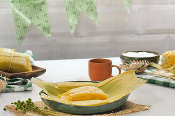

Pé de moleque

Ingredientes
500 g de amendoim
1 xícara de açúcar
1 lata de leite condensado
Modo de preparo
1-Torre o amendoim retire a casca.
2- Coloque em uma panela, acrescente o açúcar e o leite condensado.
3- Leve ao fogo e mexa até começar desgrudar do fundo da panela.
4- Em seguida despeje em uma forma untada com óleo
5- Deixe esfriar um pouco e corte em quadradinhos.
Site de retirada da receitaPamonha doce
Ingredientes
2 (doze) espigas de milho verde com a palha
1 (um) copo de água
2 (duas) xícaras de açúcar
1 (uma) xícara de coco ralado fino
1 (uma) pitada de sal
Modo de preparo
1- Rale as espigas ou corte-as rente ao sabugo e passe no liquidificador, juntamente com a água.
2- Acrescente o coco, o açúcar e mexa bem.
3- Coloque a massa na palha de milho e amarre bem..
4- Em uma panela grande ferva bem a água, e vá colocando as pamonhas uma a uma após a fervura completa da água. Importante: a água deve estar realmente fervendo para receber as pamonhas, caso contrário elas vão se desfazer.
5- Cozinhe por mais ou menos 40 minutos, retirando as pamonhas com o auxílio de uma escumadeira.
6- Deixe esfriar em local bem fresco.
7- Sirva com café e queijo ralado.
Site de retirada da receitaCural cremoso
Ingredientes
6 espigas de milho
1l de leite
2 colheres (sopa) de açúcar
1 lata de leite condensado
canela em pó a gosto
Modo de preparo
1- Tire o milho da espiga.
2- Bata o milho com o leite no liquidificador ou mixer
3- Peneire a mistura já batida.
4- Leve a mistura peneirada ao fogo médio mexendo sem parar até começar a ferver.
5- Tire do fogo e adicione o leite condensado e o açúcar.
6- Volte ao fogo médio até ferver.
7- Ao ferver mude para fogo baixo e espere 5 minutos para engrossar mais.
8- Separe em vasilhas e polvilhe a canela a gosto.
9- Leve à geladeira para esfriar
Site de retirada da receita